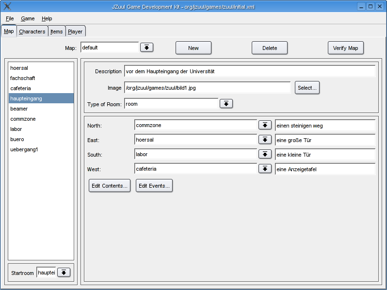
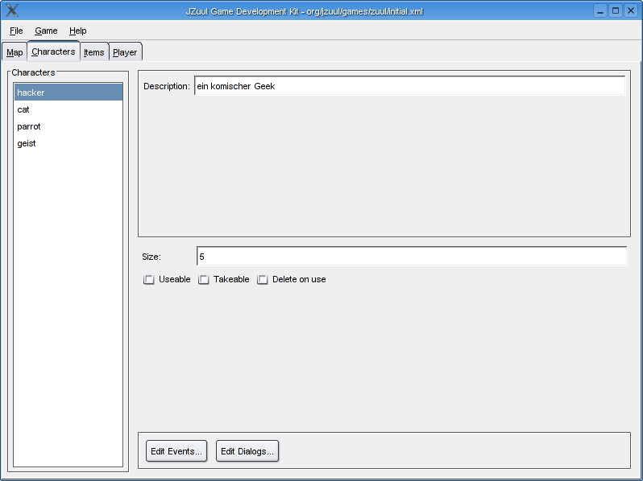
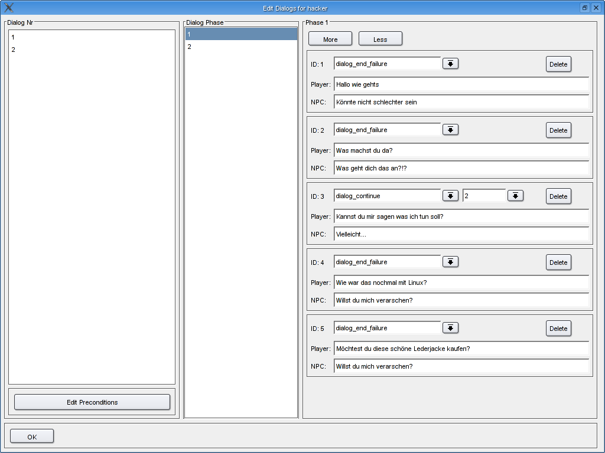
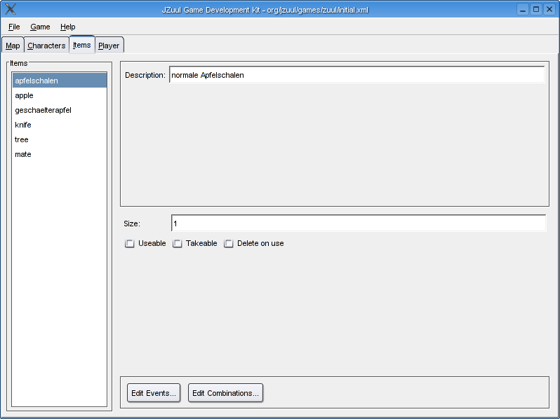
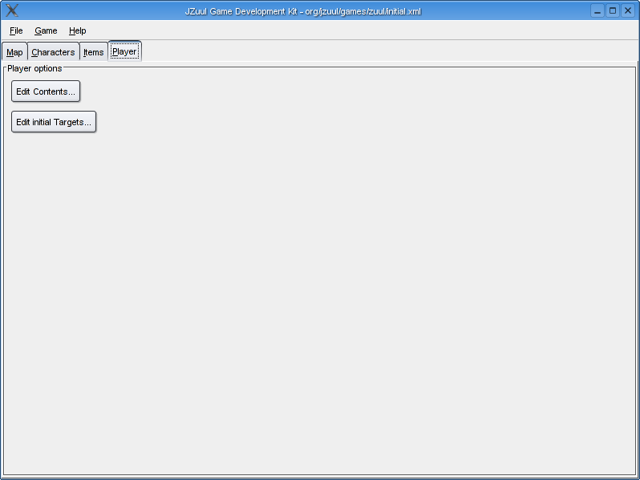

GDK Documentation
- Getting Started
- Windows Users
- Linux/Mac OS X Users
- Map Editor
- Rooms
- Beam Rooms
- Transition Rooms
- Character Editor
- Dialog Editor
- Item Editor
- Player Editor
- Events and Actions documentation
Getting Started
This document describes how to create a Game using the JZuul Game
Editor. If you want to find out how to actually run a game, please have
a look into the README file included in the Binary Distribution. To
startup the JZuul Game Editor from one of the JZuul binary
distributions, you have to execute the "gameditor" Script.
Windows Users
The Binary distribution contains a file called "gameditor.bat". If you
double click on this file, the JZuul Game Editor will start up.
Linux/Mac OS X Users
The Binary distribution contains a file called "gameditor".
Unfortunately, the ZIP File format does not preserve the executable bit
of these files. You can either execute this file by typing "chmod +x
gameditor" and then executing "./gameditor" or simply type "sh
gameditor" if you don't want to set the executable bit. After you
executed this file, the JZuul Game Editor will appear.
Map Editor

When you startup the Game Editor, you will get a new empty gamefile.
You can start creating a game by first creating the Map. You can switch
between the single editor modes by using the tab like fields at the top
of the window.
In an empty game the intial map is created automatically. The Map a
game will start with is called "default" by convention. You can add new
rooms by right clicking on the list on the left side. You will have to
enter a name for the new room and the new room will appear in the list.
Rooms have to have a description which will be show during the game. An
optional feature is an image which will be shown when the player enters
the room.
The JZuul engine currently supports three types of rooms: room,
beamroom and transitionrooms.
Rooms
A room is a simple container for items and characters, which can have
views to the different directions (show by the "look" command) and ways
to other rooms which can be used by the "go" command. Additionally a
room can have contents, i.e. items and characters which appear in the
room. You can edit the contents of a room by clicking on the "edit
contents" button. You will be presented a window offering a list of
items and characters which can be added to the rooms contents which is
a list on the right hand side.
Moreover a room can react to specific events, i.e. the events
"playerenter" (when the player enters the room), "playerleave" (when
the player leaves the room), "default" (executed after every action of
the player), "timer" (executed all 2 minutes). You can edit
actions taken at a specific event by clicking on the "Edit Events"
button.
Beam Rooms
A beam room is a room which transports the player to a random other
room on the map. A beam room can have a description by to ways and
views, as the player is transported upon the "playerenter" event and
therefore can't move inside the room.
Transition Rooms
Transition rooms are used to logically divide the game into different
maps. A transition room does not have a description, because it is just
a room in a engine sense. When the player enters the transition room
the Enigne loads the map specified as target and places the player in
the startroom of the target map. Therefore this room is just for
"transition".
Transition rooms can have preconditions, i.e. some items the player has
in his inventory. These preconditions are checked before the player
enters the room, otherwise the Engine will inform the player that he
can't enter this room at this point.
You can create a transition room by creatin a new room and selecting
"transition room" in the type combo box.
You can specify a target map and the preconditions by clicking on the
"Edit Preconditions" button.
Character Editor

The Character Editor is the second tab in the top tab group. You can
create a new character by right clicking on the left side list and
choosing "Add". A character has a description which will be shown upon
the "look" command.
A size is only necessary if you choos to make a character takeable
(i.e. letting the player successfully use the "take" command on this
character. Delete on use is only necessary if you specify that the
player can use the "use" command on this character. Usually, this is
not necessary.
A character can, like a room, react on special events, like e.g.
"ontakeup", which is send when the player uses the "take" command.
Dialog Editor

As you can see in the above graphics, a character can have multiple
dialogs. Each dialog is subject to a set of preconditions, which are
similar to the preconditions for a transition room, i.e. the player has
to give the character those items before he can "talk to" this
character.
Each dialog has several phases, which represent the progress of the
dialog. A successfull dialog in a phase can lead to another phase.
Each phase has several sentences, which are presented to the player
upon "talk to". You can create quite complex dialogs using the dialog
editor.
Be carefull when you delete a phase, because this isn't checked yet. If
you have a sentence which refers to a phase which was deleted, the
behavior of the game is undefined.
Item Editor
The item editor is quite similar
to the character editor. Therefore you can specify the same properties
for a item as for a character. Moreover, items do have events, similar
to the character events.
A feature of an item is that they have combinations. When the player ex
ecutes "use item with item" these combinations are executed. You can
edit combinations of Items by clicking on the "edit combinations"
button.
Player Editor

The Player Editor does not have as many options as the other editors.
The player has a inventory whose contents you might specify by clicking
on the "Edit contents" button.
Moreover the player has different targets which he has to fullfill
during the game. A target has two options, either item or talk.
An item target is fullfilled when a user takes up the specified
item. A talk item is fullfilled when the user executes the talk
to command on the specified character.